Chef d'œuvre
CTSER 2020/2021
Recherche de teinte
Réglages de la forme
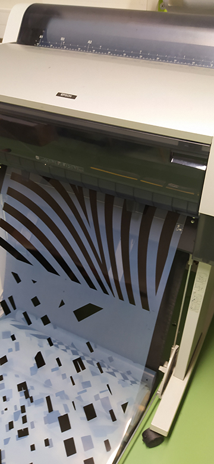
Sortie des films
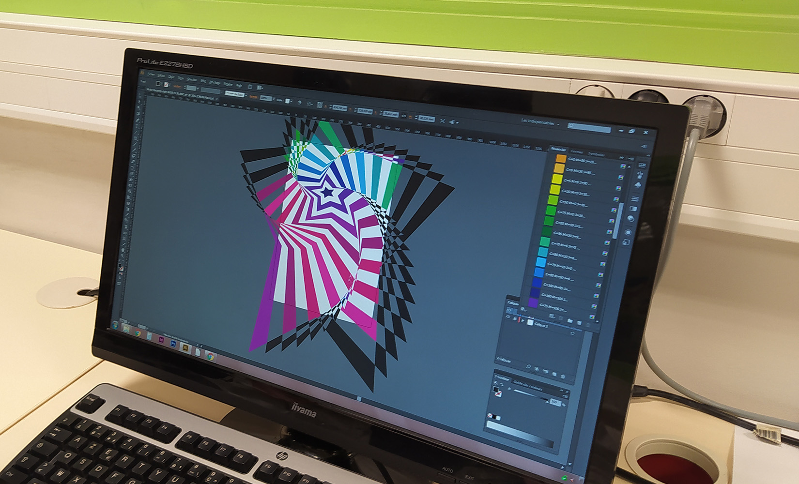
Colorisation de la forme
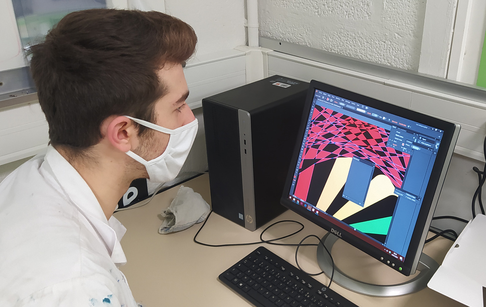
Création du visuel
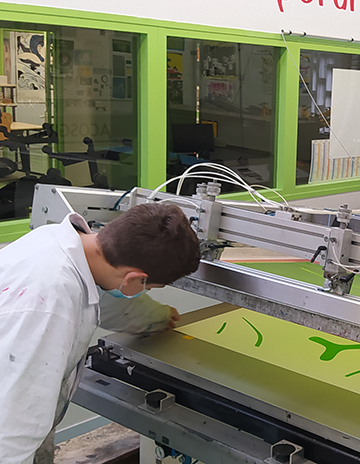
Impression de la première couleur
Vérification des typons
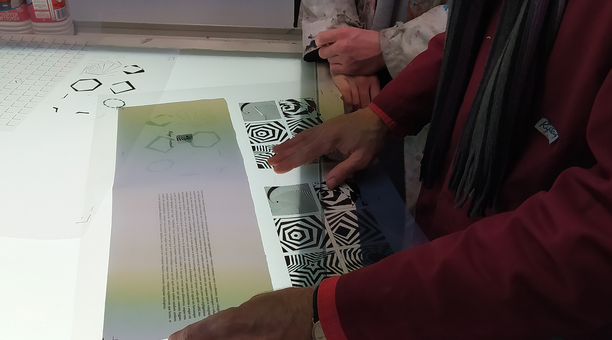
On se projette sur le support
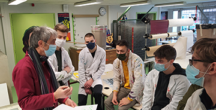
Réunion avec les éléves
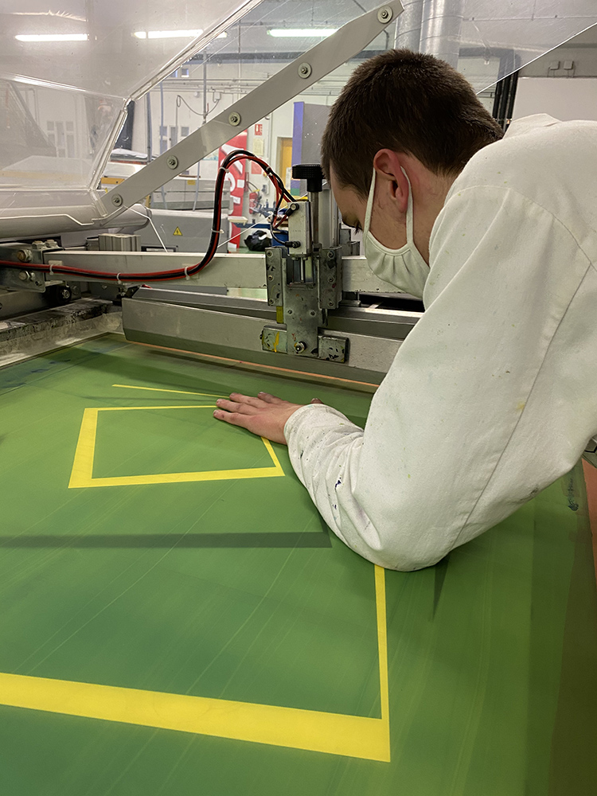
Calage sur Silair
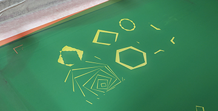
L'écran est prêt
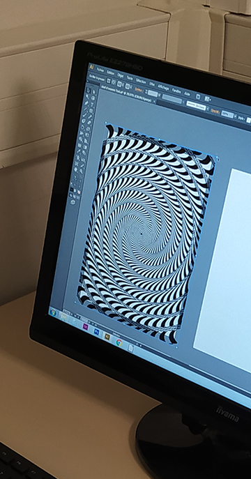
L'op art dans toute sa splandeur
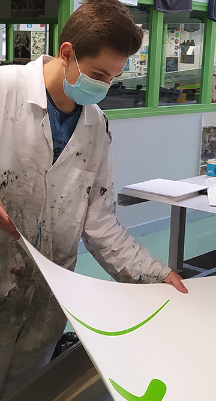
Contrôle en cours de tirage
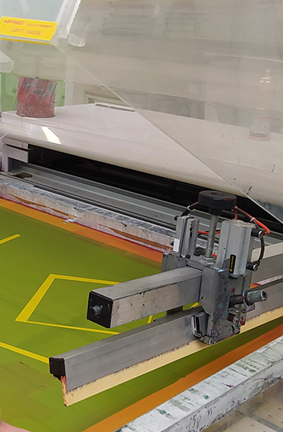
La machine est prête
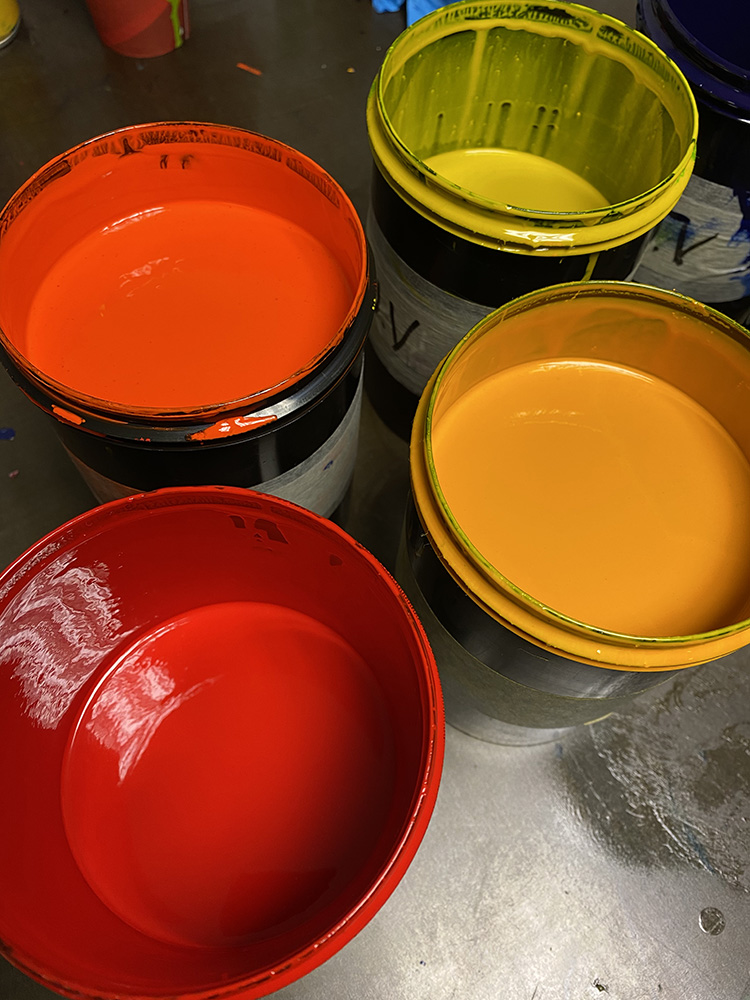
Préparation des encres
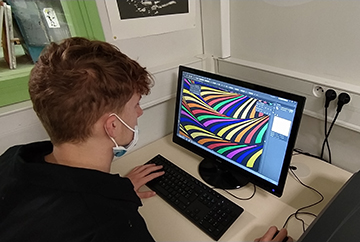
Un peu de couleur
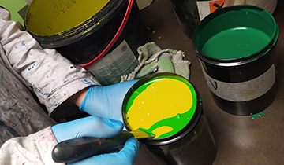
Voyons le résultat
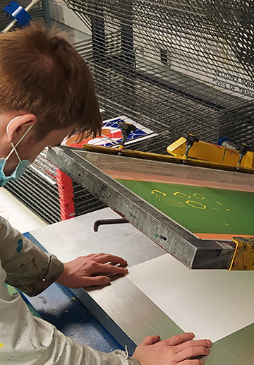
Calage sur machine manuelle
On vérifie les films
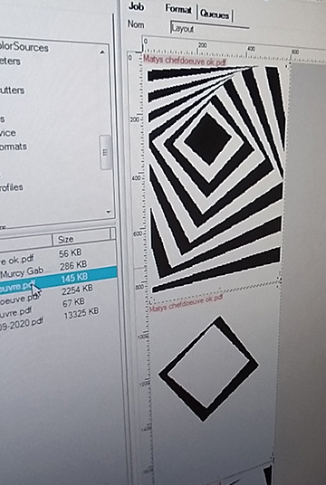
Le RIP est lancé